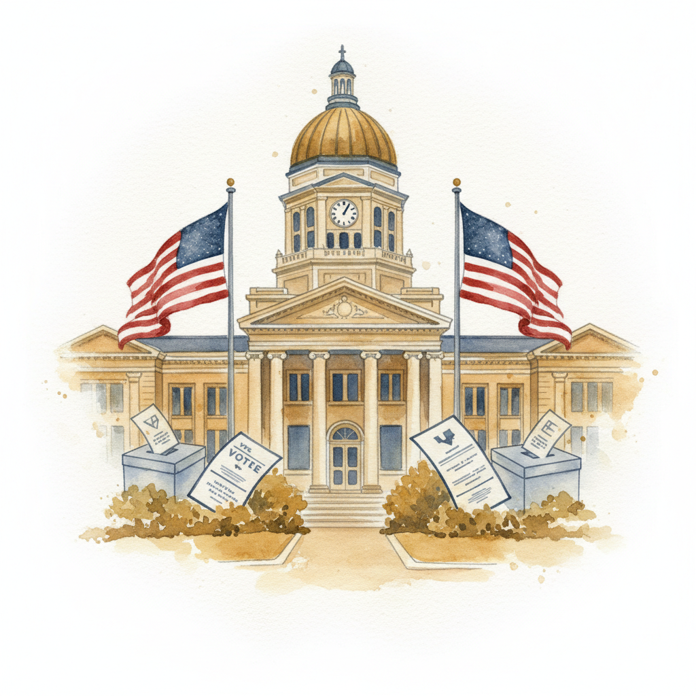

Comal County Commissioner Race Heats Up with Three-Way Republican Primary
<p>In the heart of Comal County, the race for Commissioner Precinct 2 is gaining momentum as three Republican candidates prepare for the March 5, 2026, primary election. Incumbent Sarah Martinez, seeking a second term, faces stiff competition from local business owner Tom Rodriguez and former school board member Jennifer Walsh. With early voting underway since February 14, voters in this key precinct—which spans parts of New Braunfels and rural areas—are closely watching the contest that could determine the future of local infrastructure and growth management.</p><p>Sarah Martinez has made infrastructure her hallmark during her first term, overseeing upgrades to county roads and expansions to water systems to keep pace with the region's booming population. "Our county is growing fast, and we've invested wisely to ensure our roads and utilities can handle it," Martinez said in a campaign statement. Her supporters praise her steady leadership and focus on practical improvements that benefit everyday residents.</p><p>Challenger Tom Rodriguez brings a fresh perspective from the private sector. As a construction industry veteran, Rodriguez argues that his business acumen can streamline county operations and accelerate project timelines. "I've built things from the ground up; now it's time to build a better Comal County," he told supporters at a recent meet-and-greet. Rodriguez emphasizes cost-effective solutions for road maintenance and development approvals, appealing to voters frustrated with bureaucratic delays.</p><p>Jennifer Walsh, drawing on her experience as a former school board member, highlights the interconnectedness of education, infrastructure, and community services. "As commissioner, I'll fight for balanced growth that supports our schools, protects our water resources, and keeps our neighborhoods strong," Walsh stated. Her campaign focuses on sustainable development and ensuring that county decisions prioritize family-friendly policies amid rapid expansion.</p><p>Key issues dominating the race include road maintenance in high-traffic areas, upgrades to aging water infrastructure, and managing development growth without overburdening existing resources. Each candidate has outlined distinct approaches: Martinez touts her track record, Rodriguez promises efficiency, and Walsh advocates for comprehensive planning. The winner of the primary will face any Democratic challengers in the November general election, but with Comal County's strong Republican lean, the primary victor is likely to claim the seat.</p><p>Precinct 2 voters, make your voice heard—early voting continues through February 28, with Election Day on March 5. For more information on the candidates and polling locations, visit the Comal County Elections Office website.</p>